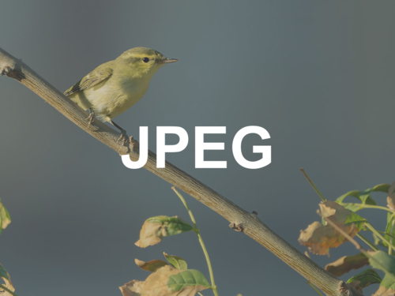
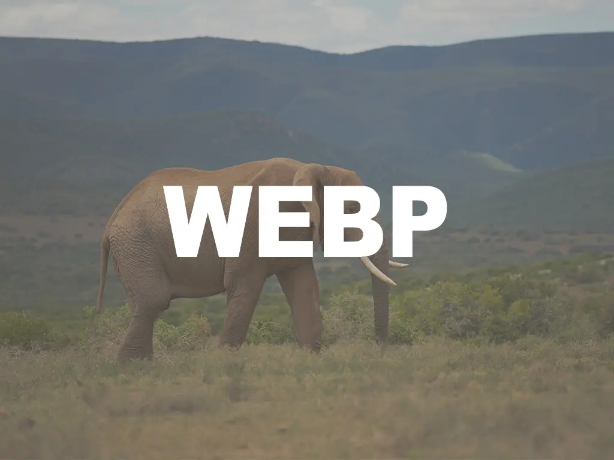

Test Image Formats
Image - Jpeg

Image - Webp

Image - Avif
Picture - Avif
Picture - Webp
Picture - Avif > Webp > Jpeg
Background - Avif
Background - Webp
Background - Multi sizes
Background - Multi sizes (avif)
Background - Multi sizes - force 2x
Background - Multi types
Background - Multi types + Multi sizes
Background - Multi types + Multi sizes - Force 2x